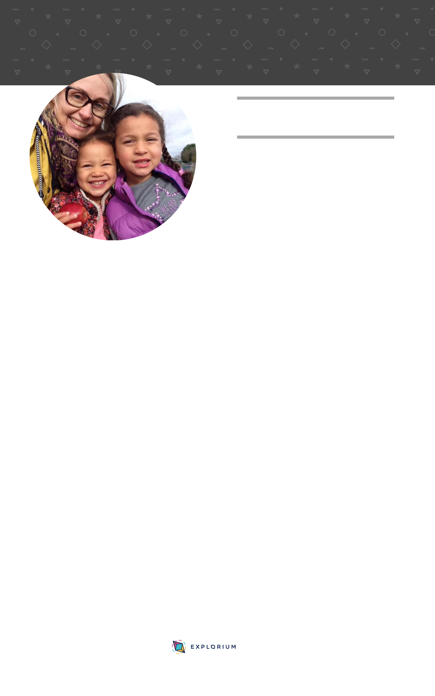

12 STRATEGIES TO GET YOUR CHILD
PASSIONATE ABOUT LEARNING
MY FAMILY'S TOP TIPS:
By Nadia
#1 Identify YOUR own mindset
#2 Explore what YOU want
to achieve for your child
#3 Keep a journal of
how things make YOU feel
ONE OF MY MANTRAS IS “THE LESS YOU FOCUS ON
THE END RESULT THE QUICKER IT WILL COME”
When I first found Light’s On® I was in search of something to help my
daughter Amna, who was not happy going to school. I remember first
watching the webinar and feeling like Julia was talking directly to me. I felt
hope, optimism and an enthusiasm to get started with the Lights On
programme. It all made so much sense to me and I had already envisaged
Amna leading her learning and following her passion.
What I hadn’t envisaged was her resisting and not wanting to engage. I was
so full of enthusiasm and raring to go but Amna wasn’t. I started to panic. I
was seeing other parent’s posts in the members Facebook group and the
progress they were making and started to wonder what I was doing wrong. I
then heard Julia’s voice telling me that it is ok to get things wrong and make
mistakes; it is all part of learning. That is when I realised that I had a fixed
mindset and was a perfectionist and that I needed to work on myself before I
could help Amna.
Not only was my over enthusiasm putting her off, my rigid approach and
need to follow the programme in a “textbook” fashion was not working for her
either. This was a bit of a “Light’s On” moment for me; why would that
approach work for her when that was one of the main reasons she didn’t like
school? I also realised that it needed to be a whole family approach in order
for Light’s On® to really make a difference. With a few small changes I was
able to turn things around quickly and we are now excelling in our Light’s
On® journey.
©Explorium 2018
explorium.co.uk
info@explorium.co.uk